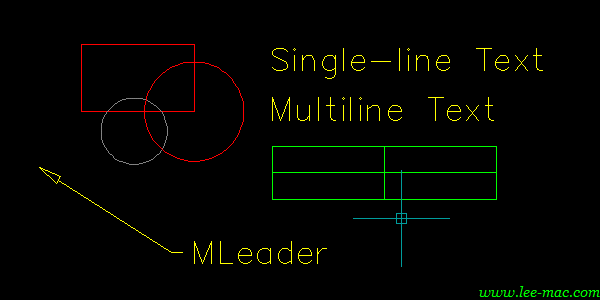

Length & Area Field
This page is delivered for consistency purposes only, as part of the LeeMac sample module of DynALisp, which shows how DynALisp turns existing AutoLISP programs into a module. The program and its description are the work of Lee Mac, who keeps all the credit for them. The original page, with the latest version, is on Lee Mac's website: https://lee-mac.com/lengthfield.html
| Function Syntax | LM-LengthAreaField – original syntax: LF (Length Field) / AF (Area Field) (see aliases) |
| Current Version | 1.4 |
| Compatible with AutoCAD for Mac? | No |
| Compatible with AutoCAD LT? | Yes |
| Original Page | lee-mac.com/lengthfield.html |
Contents
Program Description
This program offers two commands to allow a user to generate a field expression referencing either the area or the length/perimeter/circumference of one or more selected objects.
In the case of selecting multiple objects, the field expression will reference the sum of the areas or lengths of all objects in the selection.
The program will also optionally prompt the user for a selection of objects whose lengths or areas are to be subtracted from the total. The user may dismiss this second prompt if no values are to be subtracted, or the prompt may be disabled completely by changing the subtraction prompt parameter supplied to the main function.
The user may opt to specify a point at which to create a new multiline text object housing the field expression, pick a table cell in which the field should be inserted, or select an existing single-line text, multiline text, multileader, or attribute to be populated with the field expression.
Length Field
Upon issuing the command syntax LF (Length Field) at the AutoCAD command-line, the program first prompts the user to make a selection of objects for which to return the length summation.
At this prompt, the user may select any number of Arcs, Circles, Lines, 2D Polylines (light or heavy), or 3D Polylines.
Area Field
Alternatively, upon issuing the command syntax AF (Area Field) at the AutoCAD command-line, the program will prompt the user to make a selection of objects for which to return the area summation.
At this prompt, the user may select any number of Arcs, Circles, Ellipses, Hatches, 2D Polylines (light or heavy), Regions, or Splines. If the selected object is open, the area is computed as though a straight line connects the start point and endpoint.
Field Output
The user is then prompted to specify a point or table cell to insert a field expression referencing the summation of the lengths or areas of the selected objects.
At this prompt, the user may also choose the 'Object' option in order to populate the content of an existing annotation object with the field expression.
Upon choosing this option, the user may select any single-line text (DText), multiline text (MText), single-line or multiline attribute, attributed block, or multileader (MLeader) with either multiline text or attributed block content.
If the user selects an attributed block or attributed multileader with more than one attribute, the user is presented with a dialog interface listing the available attributes, and is prompted to select a destination for the field expression.
The user may optionally predefine the target block/multileader attribute by specifying the attribute tag where noted at the top of the program source code.
The resulting field expression will display the sum of the lengths or areas of the selected objects, formatted using the field formatting code specified at the top of each command definition.
Demonstration

Custom Commands
The available commands offered by the program are defined at the very top of the program source code. Additional custom commands which target specific attribute tags, or which employ varying field formatting codes may be defined by the user to accommodate drawings in which lengths or areas must be expressed in a variety of formats.
Four custom commands are already defined as examples:
;;----------------------------------------------------------------------;; ;; Length Field Commands ;; ;;----------------------------------------------------------------------;; (defun c:lf ( ) (lengthfield nil t "%lu6")) ;; Current units, subtraction prompt (defun c:lfm ( ) (lengthfield nil nil "%lu6%ct8[0.001]")) ;; Current units with 0.001 conversion factor (mm->m), no subtraction prompt ;;----------------------------------------------------------------------;; ;; Area Field Commands ;; ;;----------------------------------------------------------------------;; (defun c:af ( ) (areafield nil t "%lu6%qf1")) ;; Current units, subtraction prompt (defun c:afm ( ) (areafield nil nil "%lu6%qf1%ct8[1e-6]")) ;; Current units with 1e-6 (0.000001) conversion factor (mm2->m2), no subtraction prompt
Here, the general format of the definition of a command is:
(defun c:<Command-Name> ( ) (lengthfield <Target-Attribute-Tag> <Subtraction-Prompt> <Field-Formatting-Code>))
Here, the <Target-Attribute-Tag> may be the tag name of an attribute reference to be populated with the field expression (such tag is not case-sensitive), or nil if the user is permitted to select any attribute.
For example:
(defun c:myaf ( ) (areafield "TAG1" t "%lu2%pr3%ps[Area:,]%ct8[0.1]"))
The above custom command may be invoked at the AutoCAD command-line using the syntax myaf and targets an attribute with tag name "TAG1", prompting the user for a selection of objects whose areas are to be added to the total, followed by a selection of objects whose areas are to be subtracted from the total, with the resulting area formatted:
- in Decimal Units (%lu2)
- to a Precision of 3 d.p. (%pr3)
- with a Prefix of "Area:" (%ps[Area:,])
- with a Conversion Factor of 0.1 (%ct8[0.1])
Length / Area Formatting Code
The field formatting code supplied as the second parameter for each custom command may be altered to display the length or area in a desired format:
To determine the correct formatting code to be used, perform the following steps:
- Type FIELD at the AutoCAD command-line and press ENTER to open the Field dialog.
- Select Objects from the 'Field Category' drop-down menu.
- Select Object from the 'Field Names' section.
- Select an object (with length or area) from the drawing by clicking the object selection button adjacent to the 'Object Type' box.
- Select the Length or Area property from the 'Property' panel (or equivalent property for Arcs & Circles).
- Configure the formatting options as desired.
- Click OK and pick a point in the drawing to create a temporary MText Field.
- Download & load my Field Formatting Code program.
- Type fieldformat to run the program and select the temporary MText Field created earlier.
- Following a valid selection, the field formatting code will be printed to the command-line, e.g.:
Formatting code: "%lu4%ds44%th39"
For more examples & information on how to supply a field formatting code to a custom command, please refer to the program page for my Quick Field program.
Bundled program notes
;;----------------------=={ Length & Area Field }==---------------------;;
;; ;;
;; This program offers two commands to allow a user to generate a ;;
;; field expression referencing either the area or the ;;
;; length/perimeter/circumference of one or more selected objects. ;;
;; In the case of selecting multiple objects, the field expression ;;
;; will reference the sum of the areas or lengths of all objects in ;;
;; the selection. ;;
;; ;;
;; The user may opt to specify a point at which to create a new ;;
;; multiline text object housing the field expression, pick a table ;;
;; cell in which the field should be inserted, or select an existing ;;
;; single-line text, multiline text, multileader, or attribute to ;;
;; be populated with the field expression. ;;
;; ;;
;; Upon issuing the command syntax 'LF' (Length Field) at the AutoCAD ;;
;; command-line, the program first prompts the user to make a ;;
;; selection of objects for which to return the length summation. ;;
;; ;;
;; At this prompt, the user may select any number of Arcs, Circles, ;;
;; Lines, 2D Polylines (light or heavy), or 3D Polylines. ;;
;; ;;
;; Alternatively, upon issuing the command syntax 'AF' (Area Field) ;;
;; at the AutoCAD command-line, the program will prompt the user to ;;
;; make a selection of objects for which to return the area summation. ;;
;; ;;
;; At this prompt, the user may select any number of Arcs, Circles, ;;
;; Ellipses, Hatches, 2D Polylines (light or heavy), Regions, or ;;
;; Splines. If the selected object is open, the area is computed as ;;
;; though a straight line connects the start point and endpoint. ;;
;; ;;
;; The user is then prompted to specify a point or table cell to ;;
;; insert a field expression referencing the summation of the lengths ;;
;; or areas of the selected objects. ;;
;; ;;
;; At this prompt, the user may also choose the 'Object' option in ;;
;; order to populate the content of an existing annotation object ;;
;; with the field expression. ;;
;; ;;
;; Upon choosing this option, the user may select any single-line ;;
;; text (DText), multiline text (MText), single-line or multiline ;;
;; attribute, attributed block, or multileader (MLeader) with either ;;
;; multiline text or attributed block content. ;;
;; ;;
;; If the user selects an attributed block or attributed multileader ;;
;; with more than one attribute, the user is presented with a dialog ;;
;; interface listing the available attributes, and is prompted to ;;
;; select a destination for the field expression. ;;
;; ;;
;; The user may optionally predefine the target block/multileader ;;
;; attribute by specifying the attribute tag where noted at the top ;;
;; of the program source code. ;;
;; ;;
;; The resulting field expression will display the sum of the lengths ;;
;; or areas of the selected objects, formatted using the field ;;
;; formatting code specified at the top of each command definition. ;;
;; ;;
;;----------------------------------------------------------------------;;
;; Author: Lee Mac, Copyright © 2017 - www.lee-mac.com ;;
;;----------------------------------------------------------------------;;
;; Version 1.0 - 2017-08-06 ;;
;; ;;
;; - First release. ;;
;;----------------------------------------------------------------------;;
;; Version 1.1 - 2017-08-06 ;;
;; ;;
;; - Program modified to account for selection of existing annotation ;;
;; objects which already contain a field expression. ;;
;;----------------------------------------------------------------------;;
;; Version 1.2 - 2018-10-29 ;;
;; ;;
;; - Restructured program to use standard LM:outputtext function. ;;
;; - Incorporated Area Field functionality and added new 'AF' command. ;;
;;----------------------------------------------------------------------;;
;; Version 1.3 - 2018-11-04 ;;
;; ;;
;; - Changed 'c:lf' and 'c:af' commands to functions accepting an ;;
;; optional attribute tag and field formatting argument to enable ;;
;; the user to create multiple commands with varying parameters. ;;
;;----------------------------------------------------------------------;;
;; Version 1.4 - 2022-09-05 ;;
;; ;;
;; - Added optional prompt for lengths & areas to be subtracted. ;;
;;----------------------------------------------------------------------;;
;; tag - [str] Optional target attribute tag (nil for none)
;; sub - [bol] Optional subtraction prompt (t/nil)
;; fmt - [str] Optional field formatting string (nil for none)
Command Names And Aliases
As in every DynALisp module, each program of this sample module has one main command, named LM-*, and the original command names of Lee Mac's page are kept as its aliases: they run the same command, and can be added, renamed or removed in Dyl-Suite (saved in Resources\Aliases.csv). The rows marked ↳ are child commands of LM-LengthAreaField: they are run by their alias, or picked from LM-LengthAreaField when it lists them (their command is named Pst-*).
| Command | Aliases | Name |
|---|---|---|
| LM-LengthAreaField | – | Length / Area Field |
| ↳ LF | – | Length Field |
| ↳ LFM | – | Length Field Meters |
| ↳ (no alias) | – | Area Field |
| ↳ AFM | – | Area Field Square Meters |